Overview
This report summarizes yield, acreage, and total production estimates for Maize, Beans, Rice across focus countries. The data is updated monthly in the RFBS Dashboard via a standard data file. Our model reports on the main growing season for countries with available historical yield data for model training.
Data Limitations and Model Caveats
The data used in this report has limitations due to gaps in historical records and variations in data collection methods:
- Historical data accuracy and consistency vary by country
- Our model reflects these data gaps, as it is trained on available information
- We view these limitations as opportunities to improve data sharing and scaling methods with our country partners
Current Focus: Data presented this month covers Maize, Beans, Rice systems in Kenya, United Republic Of Tanzania, Malawi, Zambia, which are currently in season.
Note on excluded countries: Uganda, Rwanda are not included in this month's bulletin. These countries are currently post-harvest or out of the growing season — once harvesting begins, vegetation indices (NDVI/EVI) are no longer reliable predictors of crop yield and model forecasts are suspended until the next season commences.
Tanzania — Vuli season not covered: This bulletin reports Tanzania's Msimu season only. The Vuli season is currently out of season for January — crops are either pre-planting or post-harvest and satellite-based yield forecasts are not applicable. The Vuli season will be covered in a future bulletin once it becomes active.
Executive Summary
Current projections for January 2026 Beans, Maize, Rice production in Kenya, Malawi, United Republic Of Tanzania, Zambia show varying forecasts between USDA, FAO and UMD-XylemLab models, as summarized in Table and Figure below. For maize, Malawi and Zambia exhibit close USDA and FAO estimates, with Malawi ranging from 3.0 to 3.5 million MT and Zambia near 3.3 to 3.4 million MT, while UMD-XylemLab offers higher and broader ranges, reflecting uncertainty and including Malawi's 2.74 to 4.71 million MT and Zambia’s 3.0 to 4.47 million MT. Kenya’s maize production shows a marked difference with USDA and FAO estimates around 4.3 to 4.4 million MT, contrasting with a substantially lower UMD estimate (0.05 to 0.8 million MT), likely due to UMD’s narrower area scope. UMD-XylemLab is the sole source providing projections for Tanzania, indicating maize production between 0.83 and 2.03 million MT. Rice forecasts show FAA and USDA values in Malawi and Kenya exceeding UMD estimates; for example, Kenya's 4.05 to 4.1 million MT (USDA/FAO) versus near zero by UMD. Beans data is only from UMD-XylemLab, signaling moderate production with ranges such as 0.12 to 0.39 million MT in Malawi and 0.04 to 0.16 million MT in Tanzania. Discrepancies reflect differences in geographic coverage and model sensitivity to seasonal transitions. Overall, the production landscape for January 2026 highlights stability in maize and beans with notable uncertainty in rice and Kenyan maize projections across sources.
All Sources Interactive Chart
All Sources Comparison Table
| Country | Crop | Source | Area (Million ha) | Yield (MT/ha) | Min - Max Production (Million MT) |
|---|---|---|---|---|---|
| Malawi | Maize | USDA | 1.8 | 1.67 | 3.0 |
| FAO | 1.8 | 1.76 | 3.5 | ||
| UMD-XylemLab | 1.83 | 1.94 | 2.74 - 4.71 | ||
| Rice | FAO | 0.07 | 1.6 | 0.12 | |
| UMD-XylemLab | 0.08 | 1.21 | 0.04 - 0.18 | ||
| Beans | UMD-XylemLab | 0.37 | 0.71 | 0.12 - 0.39 | |
| Zambia | Maize | USDA | 1.4 | 2.43 | 3.4 |
| FAO | 1.4 | 2.3 | 3.3 | ||
| UMD-XylemLab | 1.42 | 2.57 | 3.0 - 4.47 | ||
| Rice | FAO | 0.05 | 1.3 | 0.006 | |
| UMD-XylemLab | 0.05 | 1.04 | 0.01 - 0.09 | ||
| Beans | UMD-XylemLab | 0.13 | 0.55 | 0.02 - 0.12 | |
| Kenya | Maize | USDA | 2.3 | 1.91 | 4.4 |
| FAO | 2.4 | 1.76 | 4.28 | ||
| UMD-XylemLab | 0.74 | 0.8 | 0.05 - 0.8 | ||
| Rice | USDA | 0.06 | 5.18 | 4.1 | |
| FAO | 0.04 | 5.8 | 4.05 | ||
| UMD-XylemLab | 0.0 | 1.09 | 0.0 - 0.01 | ||
| Beans | UMD-XylemLab | 0.37 | 0.3 | 0.02 - 0.28 | |
| United Republic Of Tanzania | Maize | UMD-XylemLab | 1.13 | 1.31 | 0.83 - 2.03 |
| Rice | UMD-XylemLab | 0.2 | 1.37 | 0.13 - 0.46 | |
| Beans | UMD-XylemLab | 0.16 | 0.71 | 0.04 - 0.16 |
Regional Overview/Conditions
Country Summary
- Kenya: Bean crops across Kenya show a predominantly stable trend with all reported regions reflecting stable conditions. Yield anomalies for beans are mostly small positive, with Samburu showing a notably high anomaly of 211.43% indicating localized improving conditions. Maize conditions are mixed with some regions displaying slight negative yield anomalies, but overall trends remain stable. Notably, Garissa, Isiolo, and Kitui show negative yield anomalies ranging from -1.37% to -3.63%. Rice conditions are stable but show negative yield anomalies in all recorded counties, with values ranging from -3.84% in Garissa to -15.93% in Embu, indicating some concerns in rice productivity. No extreme poor statuses are flagged but the negative anomalies in rice warrant attention.
- United Republic Of Tanzania: Crop conditions across Tanzania's regions for beans, maize, and rice remain generally stable, with no alarming trends observed. Beans show stable trends with positive yield anomalies mostly under 1.5%, indicating near-normal conditions. Maize exhibits negative yield anomalies across all regions, ranging from -0.7% to -3.5%, signaling some stress but still stable trends. Rice is facing stronger negative yield anomalies, between -4% and nearly -11%, particularly in coastal regions like Mtwara and Lindi. No regions report poor conditions outright, but rice's negative anomalies warrant close monitoring.
- Malawi: Crop conditions in Malawi remain stable across beans, maize, and rice. Beans show positive yield anomalies in the Central (1.09%) and Northern Regions (0.82%), with a smaller positive anomaly in the Southern Region (0.31%), indicating generally favorable conditions with no alarming trends. Maize yields are stable but show slight negative anomalies across all regions: Central (-0.64%), Northern (-0.39%), and Southern (-0.35%), signalling a slight downward pressure but overall stable conditions. Rice exhibits the most notable negative anomalies, with Central Region at -6.57%, Northern at -7.82%, and Southern at -8.48%, suggesting less favorable conditions and greater cause for monitoring. No crop is currently flagged as poor or watch, but rice requires attention due to consistent and larger negative anomalies.
- Zambia: For beans, all regions indicate stable trends with only minor positive yield anomalies ranging roughly from 0.6% to 1.3%, reflecting generally stable and favorable conditions without alarming deviations. The predicted bean yields range between 0.46 to 0.67 Mg/ha, with North-Western and Lusaka showing the highest and lowest extremes respectively. Maize shows stable conditions across all surveyed regions but with small negative yield anomalies between -0.25% and -0.62%, pointing to slight but consistent decreases in expected yields, notably in Southern and Western regions where predicted yields are on the lower side (1.32 to 2.35 Mg/ha), signaling mild concern. Rice conditions are stable but with uniformly negative yield anomalies from about -5.4% in Muchinga to -11.6% in Lusaka, which highlights a cautious outlook. Predicted rice yields range from 0.75 to 1.49 Mg/ha, with Eastern and Lusaka provinces presenting the lowest and highest extremes respectively. No severe deteriorations are evident but rice yields warrant continued monitoring due to the consistent negative anomalies.
Kenya

Figure: Agricultural Calendar – Kenya
Kenya is currently in the short rains agricultural season from October 2025 through March 2026, with the main planting period concluding in January 2026. Harvest is expected to commence in February and continue through March, marking the transition from crop maturation to the start of harvest activities across various regions.
Regional Crop Conditions Summary
Bean crops across Kenya show a predominantly stable trend with all reported regions reflecting stable conditions. Yield anomalies for beans are mostly small positive, with Samburu showing a notably high anomaly of 211.43% indicating localized improving conditions. Maize conditions are mixed with some regions displaying slight negative yield anomalies, but overall trends remain stable. Notably, Garissa, Isiolo, and Kitui show negative yield anomalies ranging from -1.37% to -3.63%. Rice conditions are stable but show negative yield anomalies in all recorded counties, with values ranging from -3.84% in Garissa to -15.93% in Embu, indicating some concerns in rice productivity. No extreme poor statuses are flagged but the negative anomalies in rice warrant attention.
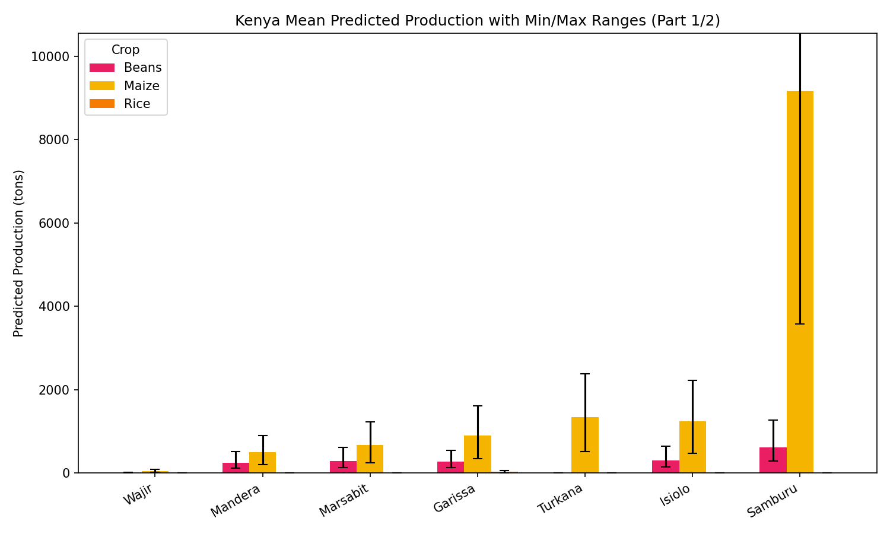
Figure: Mean Predicted Production with Min/Max – Kenya (Part 1)
Bar chart showing mean predicted production for maize, beans, and rice with min/max ranges.
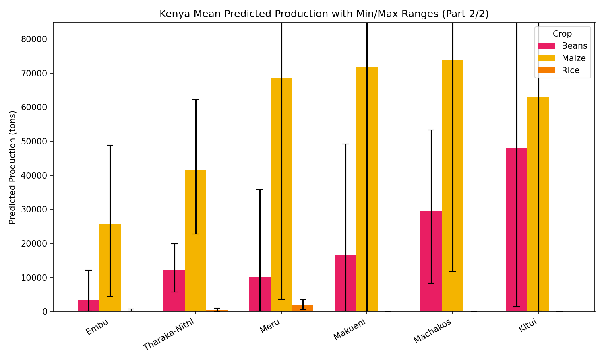
Figure: Mean Predicted Production with Min/Max – Kenya (Part 2)
Bar chart showing mean predicted production for maize, beans, and rice with min/max ranges.
Maize Maps
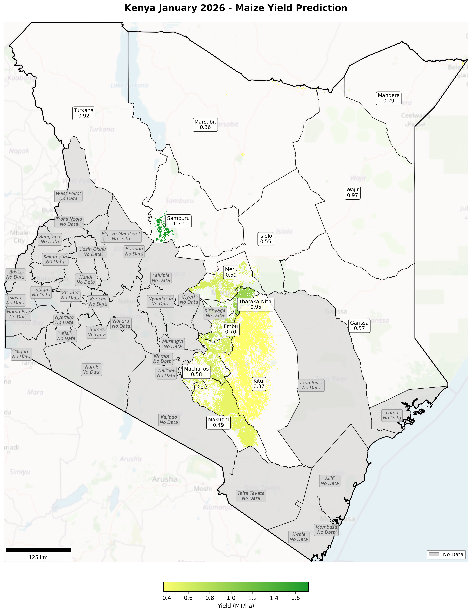
Regional Maize Yield Forecasts
In January 2026, Samburu leads Kenya's maize yield prediction with an estimated 2.57 MgT/ha, marking the highest regional yield. In contrast, Kitui records the lowest yield at 0.24 MgT/ha, highlighting a significant performance disparity across regions with available data.
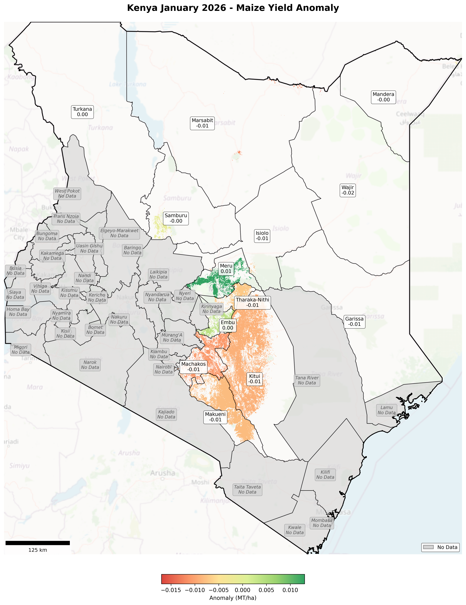
Regional Maize Yield Anomaly
In January 2026, Meru shows the highest positive maize yield anomaly at +0.01 MgT/ha, while Wajir records the lowest at -0.02 MgT/ha, indicating slight above-average yields in Meru and below-average yields especially in Wajir and adjacent regions.
Beans Maps
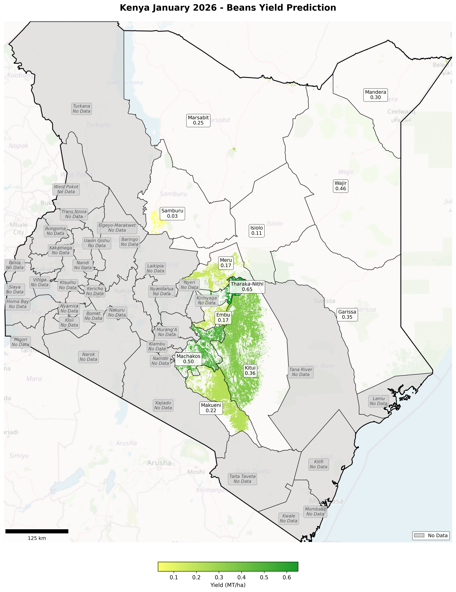
Regional Beans Yield Forecasts
In January 2026, Tharaka-Nithi is the top-performing region for beans yield prediction in Kenya with 0.65 MgT/ha, while Samburu shows the lowest yield at 0.03 MgT/ha. Most eastern regions including Wajir (0.46 MgT/ha) and Mandera (0.30 MgT/ha) display moderate yields, with large areas lacking data.
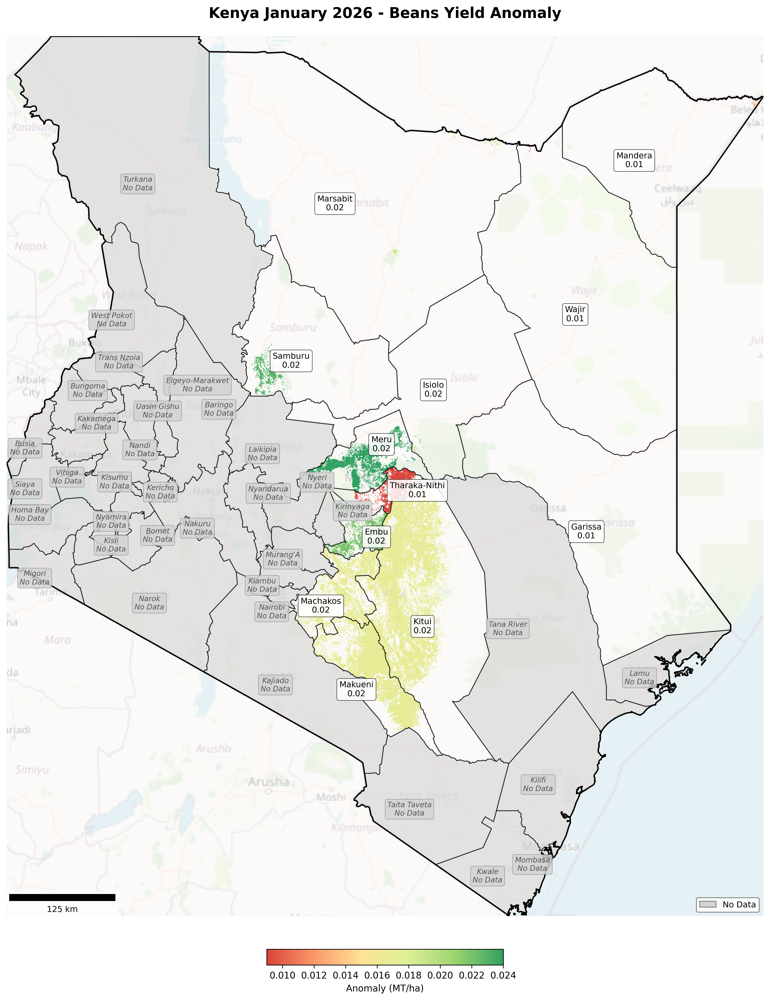
Regional Beans Yield Anomaly
In January 2026, Meru and Embu regions showed the highest positive beans yield anomalies at 0.02 MgT/ha, while Tharaka-Nithi experienced a lower anomaly around 0.01 MgT/ha, indicating a notable yield dip. Most other labeled regions exhibit small positive anomalies near 0.01–0.02 MgT/ha, with many areas lacking data.
Rice Maps
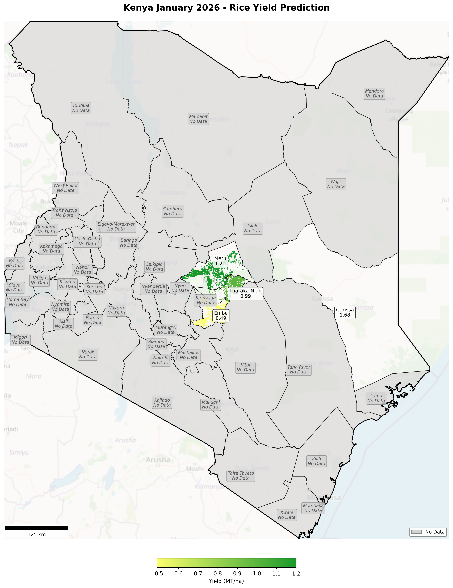
Regional Rice Yield Forecasts
In January 2026, Garissa is predicted to have the highest rice yield at 1.68 MgT/ha, while Embu shows the lowest yield at 0.49 MgT/ha, indicating notable regional variation across Kenya. Meru also performs well above average at 1.20 MgT/ha, whereas most other regions have no data available.
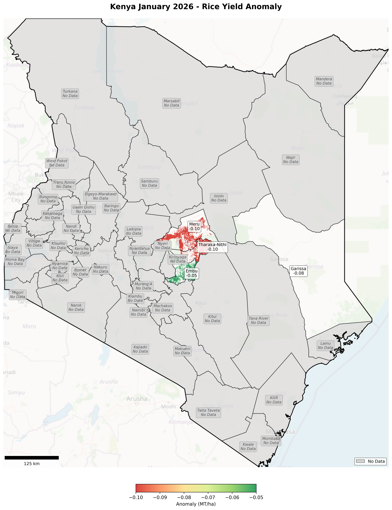
Regional Rice Yield Anomaly
In January 2026, Tharaka-Nithi recorded the largest negative rice yield anomaly in Kenya at -0.10 MgT/ha, followed by Meru and Embu with anomalies of -0.09 MgT/ha, indicating below-average yields in these regions.
Production Narrative
Beans cover a total reported area of approximately 366,036 ha across key counties. Kitui leads bean production with a mean predicted production of 47,846 tons, followed by Machakos (29,584 tons) and Makueni (16,630 tons). Maize is the top-performing crop in terms of production volume with large areas in Kitui (262,977 ha) and Machakos (117,077 ha) yielding mean predicted productions of 63,114 and 73,759 tons respectively; Meru also provides a substantial maize output (68,452 tons). Rice occupies smaller areas with lower production figures; Meru has the highest mean predicted rice production at 1,776 tons, with Embu and Garissa producing 245 and 32 tons respectively. While trends are generally stable for all crops, maize shows some slight negative yield anomalies in several counties, suggesting localized production uncertainties to monitor in upcoming reports.
United Republic Of Tanzania
Regional Crop Conditions Summary
Crop conditions across Tanzania's regions for beans, maize, and rice remain generally stable, with no alarming trends observed. Beans show stable trends with positive yield anomalies mostly under 1.5%, indicating near-normal conditions. Maize exhibits negative yield anomalies across all regions, ranging from -0.7% to -3.5%, signaling some stress but still stable trends. Rice is facing stronger negative yield anomalies, between -4% and nearly -11%, particularly in coastal regions like Mtwara and Lindi. No regions report poor conditions outright, but rice's negative anomalies warrant close monitoring.

Figure: Mean Predicted Production with Min/Max – United Republic Of Tanzania (Part 1)
Bar chart showing mean predicted production for maize, beans, and rice with min/max ranges.

Figure: Mean Predicted Production with Min/Max – United Republic Of Tanzania (Part 2)
Bar chart showing mean predicted production for maize, beans, and rice with min/max ranges.
Maize Maps — Msimu
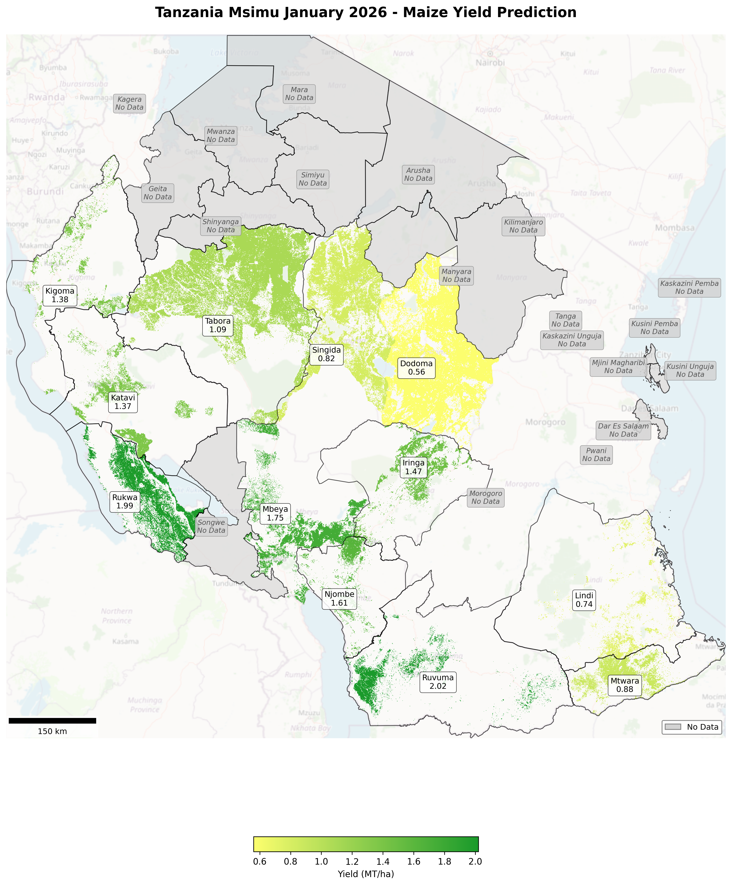
Regional Maize Yield Forecasts — Msimu
In January 2026, Ruvuma is the top-performing region for maize yield with 2.02 MgT/ha, while Dodoma shows the lowest yield at 0.56 MgT/ha, representing a notable negative anomaly. Yields generally range from below 0.6 to above 2.0 MgT/ha across the mapped regions.
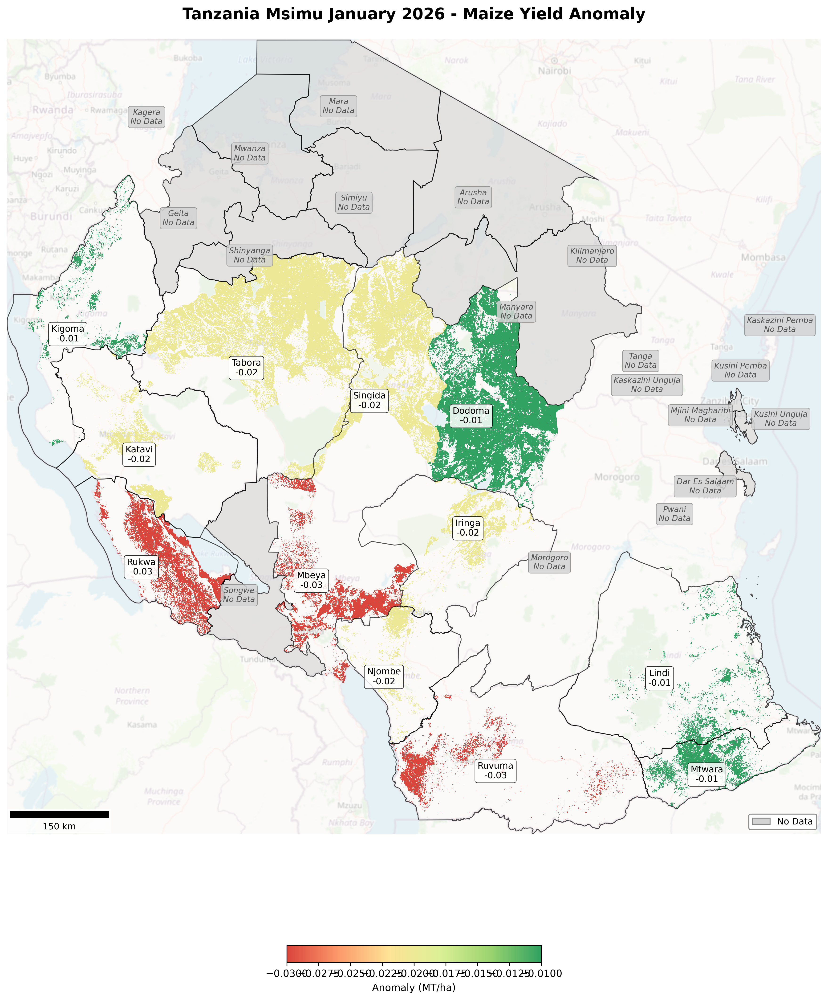
Regional Maize Yield Anomaly — Msimu
In January 2026, maize yield anomalies for the Msimu season in Tanzania show predominantly negative anomalies across reported regions, with Dodoma, Singida, and Mbeya experiencing the largest declines around -0.02 MgT/ha. Mtwara and Kigoma display the least negative anomalies near -0.01 MgT/ha, indicating relatively better performance amidst widespread decreases.
Beans Maps — Msimu
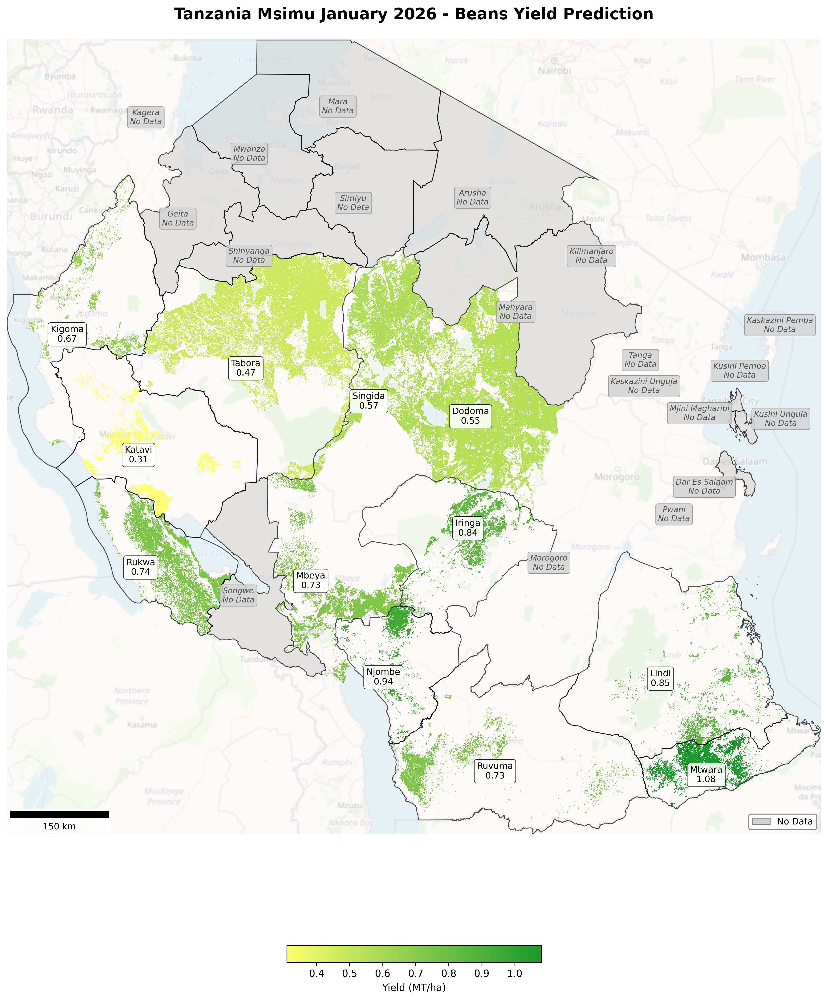
Regional Beans Yield Forecasts — Msimu
In January 2026, Msimu season beans yield in Tanzania is highest in Mtwara at 1.07 MgT/ha and lowest in Katavi at 0.31 MgT/ha. Several northern and eastern regions show no data, with central and southern regions generally yielding between 0.5 and 0.9 MgT/ha.
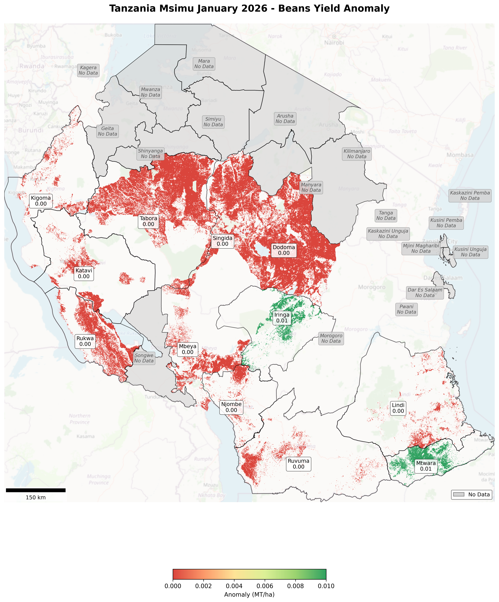
Regional Beans Yield Anomaly — Msimu
In January 2026, Tanzania's highest bean yield positive anomalies are observed in the Dodoma region, reaching up to 0.01 MgT/ha above average, while Njumbe shows localized low-performance areas with anomalies near 0.00 MgT/ha. Regions like Katavi and Kigoma also exhibit slight positive anomalies, whereas areas in Rukwa and Mtwara display below-average yields, highlighting regional extremes.
Rice Maps — Msimu
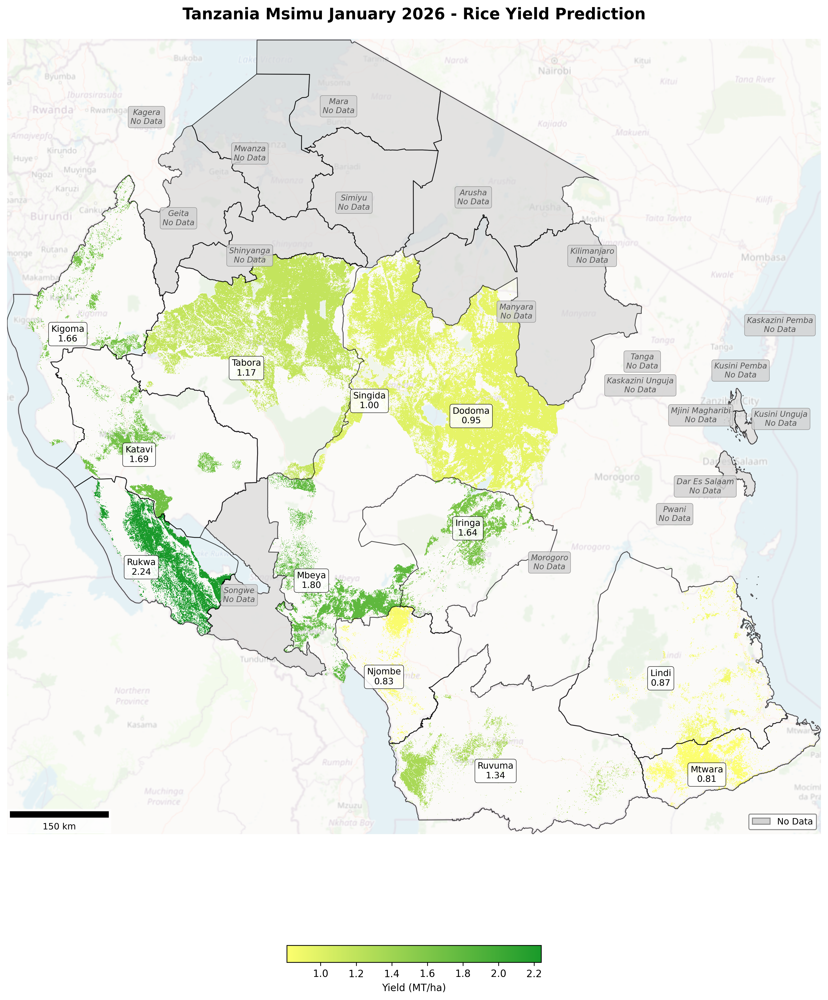
Regional Rice Yield Forecasts — Msimu
In January 2026, Rukwa in southwestern Tanzania shows the highest rice yield prediction at 2.39 MT/ha, indicating a strong positive anomaly, while Mtwara exhibits the lowest yield at 0.79 MT/ha, reflecting a significant negative anomaly. Central and northern regions like Dodoma (0.94 MT/ha) and Singida (0.98 MT/ha) show below average yields, with several northern regions reporting no data.
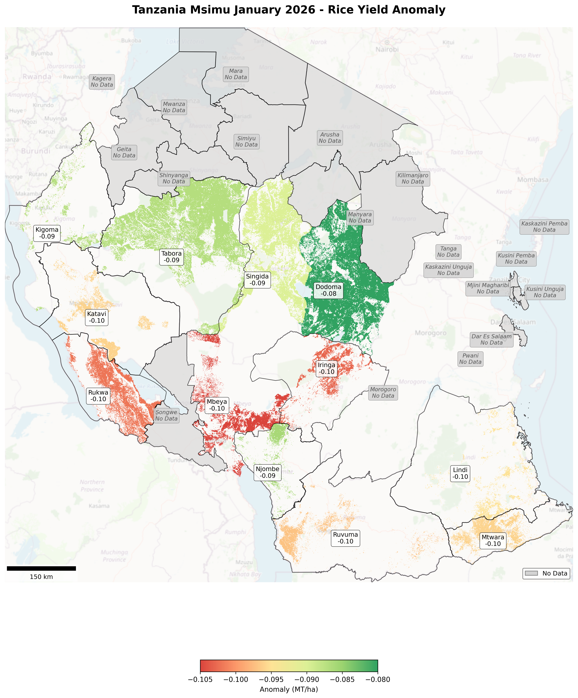
Regional Rice Yield Anomaly — Msimu
In January 2026, Tanzania's rice yield anomaly during the Msimu season showed generally negative deviations, with the highest negative anomalies (-0.10 MT/ha) in Iringa, Mbeya, Rukwa, Katavi, Lindi, Mtwara, and Ruvuma. Dodoma displayed the least negative anomaly at -0.08 MT/ha, indicating relatively better performance.
Production Narrative
The total area under beans is around 165,000 hectares cumulatively across regions, with notable mean predicted productions including Tabora (19,429 tons), Dodoma (13,162 tons), and Singida (12,793 tons). Maize has the largest cultivation area, exceeding 900,000 hectares combined, with highest mean predicted productions in Tabora (317,837 tons), Rukwa (222,291 tons), and Mbeya (167,864 tons); however, maize shows consistent negative yield anomalies indicating some yield decrease risk. Rice production areas cover smaller extents, with key production in Rukwa (47,618 tons), Mbeya (32,336 tons), and Tabora (61,371 tons), but rice faces the highest negative yield anomalies and greater uncertainty. Overall, maize remains the top-producing crop by volume despite slight yield setbacks, followed by rice and beans, with stable trends but varying regional performances.
Malawi
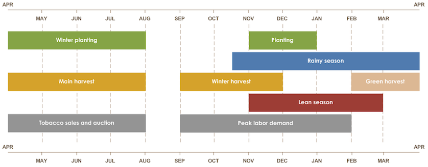
Figure: Agricultural Calendar – Malawi
Malawi is currently in the main planting season for 2026 which spans from November to January, and the main harvest period is expected to begin in April and extend through July. This marks a critical phase of crop development as farmers prepare for the upcoming harvest.
Regional Crop Conditions Summary
Crop conditions in Malawi remain stable across beans, maize, and rice. Beans show positive yield anomalies in the Central (1.09%) and Northern Regions (0.82%), with a smaller positive anomaly in the Southern Region (0.31%), indicating generally favorable conditions with no alarming trends. Maize yields are stable but show slight negative anomalies across all regions: Central (-0.64%), Northern (-0.39%), and Southern (-0.35%), signalling a slight downward pressure but overall stable conditions. Rice exhibits the most notable negative anomalies, with Central Region at -6.57%, Northern at -7.82%, and Southern at -8.48%, suggesting less favorable conditions and greater cause for monitoring. No crop is currently flagged as poor or watch, but rice requires attention due to consistent and larger negative anomalies.
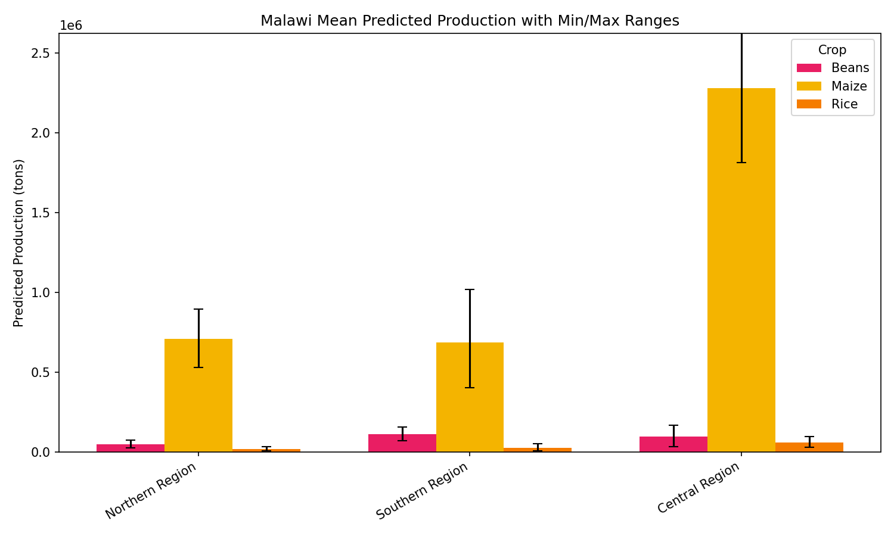
Figure: Mean Predicted Production with Min/Max – Malawi (Part 1)
Bar chart showing mean predicted production for maize, beans, and rice with min/max ranges.
Maize Maps
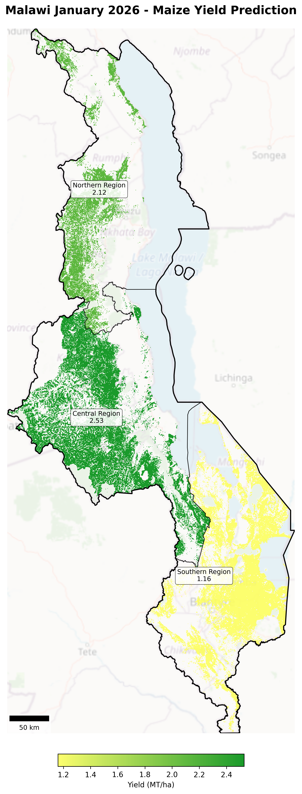
Regional Maize Yield Forecasts
In January 2026, Malawi's Central Region is predicted to have the highest maize yield at 2.53 MT/ha, while the Southern Region shows the lowest yield at 1.16 MT/ha, indicating a significant regional disparity in maize production. The Northern Region has a moderate yield prediction of 2.12 MT/ha.
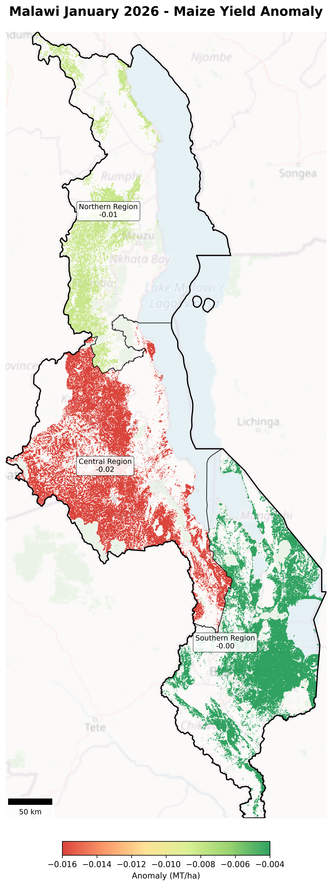
Regional Maize Yield Anomaly
In January 2026, the Central Region of Malawi shows the largest negative maize yield anomaly at -0.02 MgT/ha, indicating below-average yields, while the Southern Region experiences the highest positive anomaly near 0.00 MgT/ha, suggesting relatively stable or slightly above-average yields. The Central Region represents the extreme low-performing area on the map.
Beans Maps
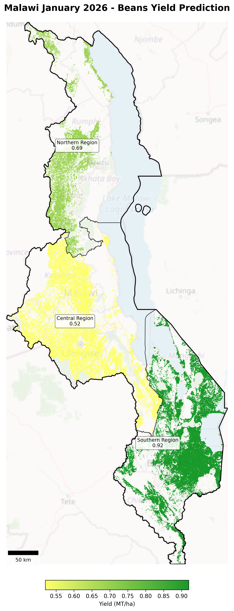
Regional Beans Yield Forecasts
In January 2026, Malawi's Southern Region shows the highest predicted beans yield at 0.92 MT/ha, while the Central Region records the lowest at 0.52 MT/ha, indicating a pronounced north-to-south yield gradient.
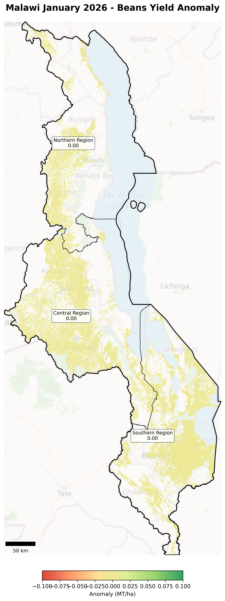
Regional Beans Yield Anomaly
In January 2026, Malawi's Northern and Central Regions show positive beans yield anomalies around 0.01 MT/ha, indicating above-average yields, while the Southern Region experiences near-zero to negative anomalies with the most extreme negative anomalies concentrated there.
Rice Maps
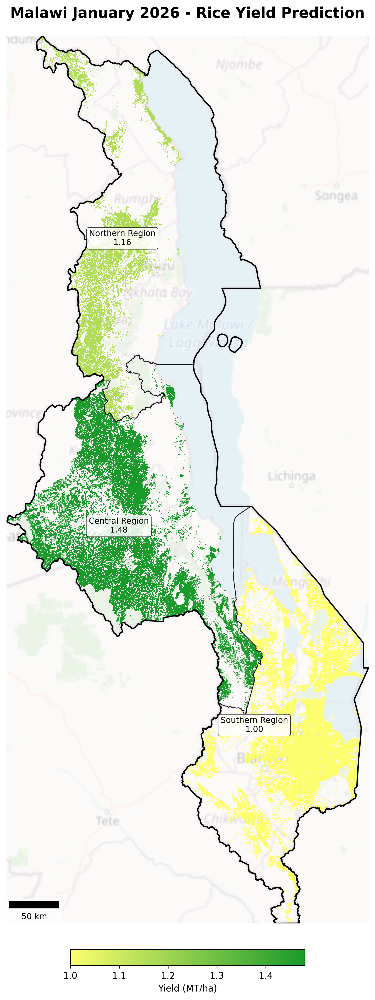
Regional Rice Yield Forecasts
In January 2026, Malawi's Central Region is the top-performing rice area with a predicted yield of 1.48 MgT/ha, while the Southern Region shows the lowest yield at 1.00 MgT/ha, indicating a significant regional yield gradient. The Southern Region notably exhibits the lowest extreme yield values on the map.
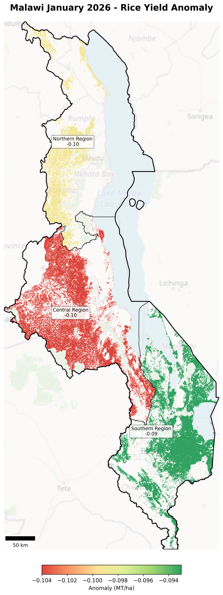
Regional Rice Yield Anomaly
In January 2026, Malawi's Central Region exhibits the largest negative rice yield anomaly at -0.10 MgT/ha, matched by the Northern Region, while the Southern Region shows a slightly smaller negative anomaly of -0.09 MgT/ha. The map highlights a regional gradient with the Central and Northern areas experiencing the most pronounced yield declines.
Production Narrative
The top-performing crop by production area is maize, with total areas of 901,662 ha in Central, 333,215 ha in Northern, and 592,161 ha in Southern Regions. Mean predicted maize production is highest in Central Region at 2,281,205 tons, followed by Southern at 686,907 tons, and Northern at 706,416 tons, showing stable trends but slight negative yield anomalies. Beans occupy 181,339 ha in Central, 67,015 ha in Northern, and 119,093 ha in Southern Regions, with mean predicted production of 94,296 tons (Central), 46,240 tons (Northern), and 109,566 tons (Southern), with positive yield anomalies supporting their stable trend. Rice covers smaller areas: 39,510 ha in Central, 14,601 ha in Northern, and 25,948 ha in Southern Regions, with mean predicted productions of 58,475, 16,937, and 25,948 tons respectively. Rice shows stable trends but the highest uncertainty and negative yield anomalies, particularly in the Southern Region, indicating higher forecast variability and a need for close monitoring.
Zambia

Figure: Agricultural Calendar – Zambia
Zambia is currently in the main agricultural season spanning from November 2025 through May 2026. Planting occurred primarily in November to January, with harvest expected to start from April and continue through May 2026, marking the transition from crop development to harvest phase.
Regional Crop Conditions Summary
For beans, all regions indicate stable trends with only minor positive yield anomalies ranging roughly from 0.6% to 1.3%, reflecting generally stable and favorable conditions without alarming deviations. The predicted bean yields range between 0.46 to 0.67 Mg/ha, with North-Western and Lusaka showing the highest and lowest extremes respectively. Maize shows stable conditions across all surveyed regions but with small negative yield anomalies between -0.25% and -0.62%, pointing to slight but consistent decreases in expected yields, notably in Southern and Western regions where predicted yields are on the lower side (1.32 to 2.35 Mg/ha), signaling mild concern. Rice conditions are stable but with uniformly negative yield anomalies from about -5.4% in Muchinga to -11.6% in Lusaka, which highlights a cautious outlook. Predicted rice yields range from 0.75 to 1.49 Mg/ha, with Eastern and Lusaka provinces presenting the lowest and highest extremes respectively. No severe deteriorations are evident but rice yields warrant continued monitoring due to the consistent negative anomalies.
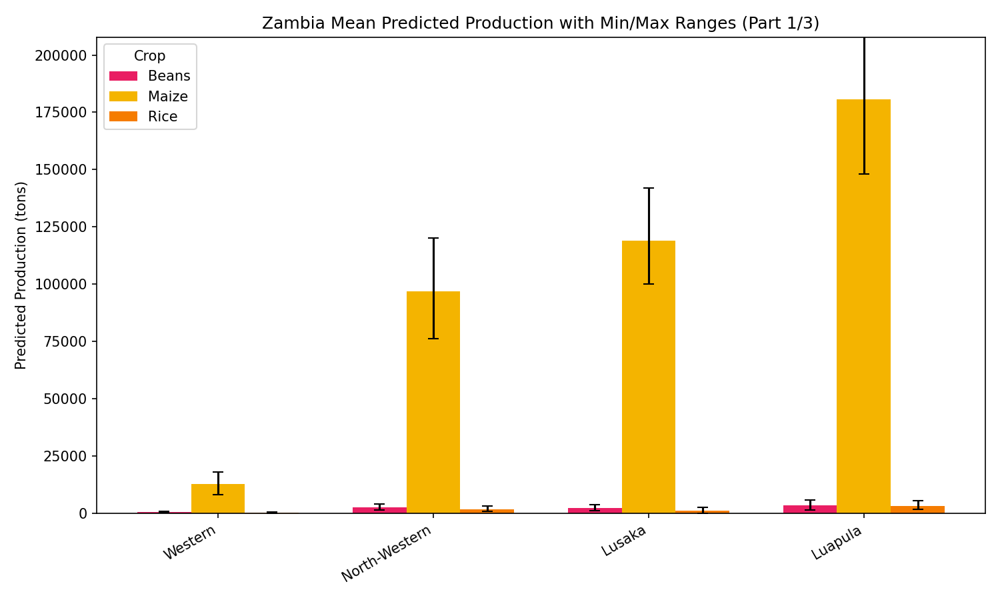
Figure: Mean Predicted Production with Min/Max – Zambia (Part 1)
Bar chart showing mean predicted production for maize, beans, and rice with min/max ranges.
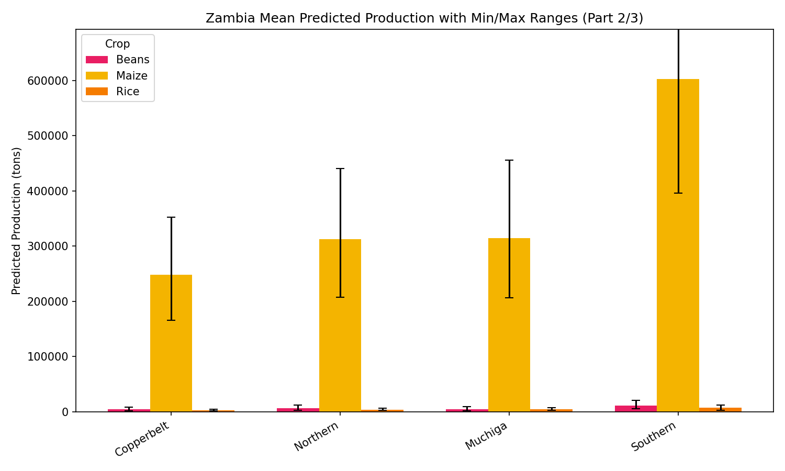
Figure: Mean Predicted Production with Min/Max – Zambia (Part 2)
Bar chart showing mean predicted production for maize, beans, and rice with min/max ranges.
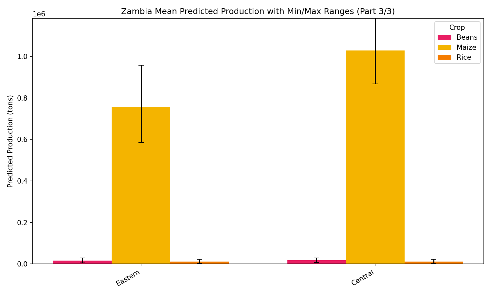
Figure: Mean Predicted Production with Min/Max – Zambia (Part 3)
Bar chart showing mean predicted production for maize, beans, and rice with min/max ranges.
Maize Maps
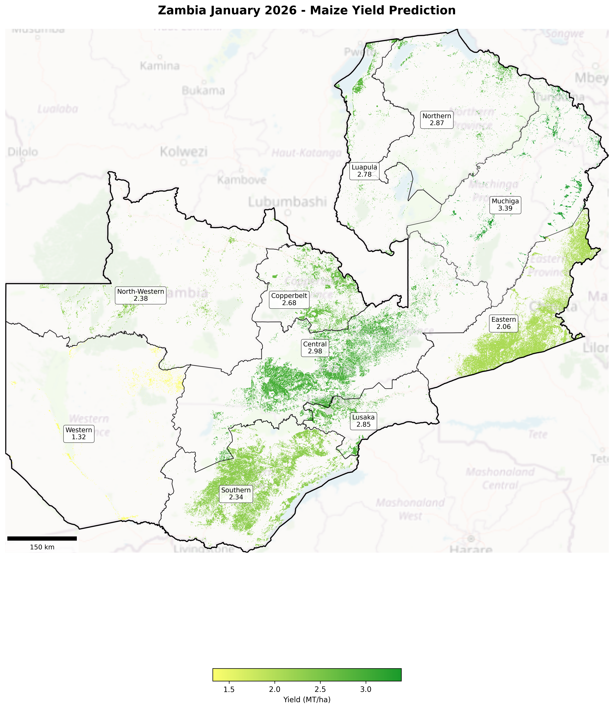
Regional Maize Yield Forecasts
In January 2026, Muchinga is predicted as the top maize-producing region in Zambia with a yield of 3.40 MgT/ha, while Western performs lowest at 1.32 MgT/ha, indicating a notable yield disparity across regions.
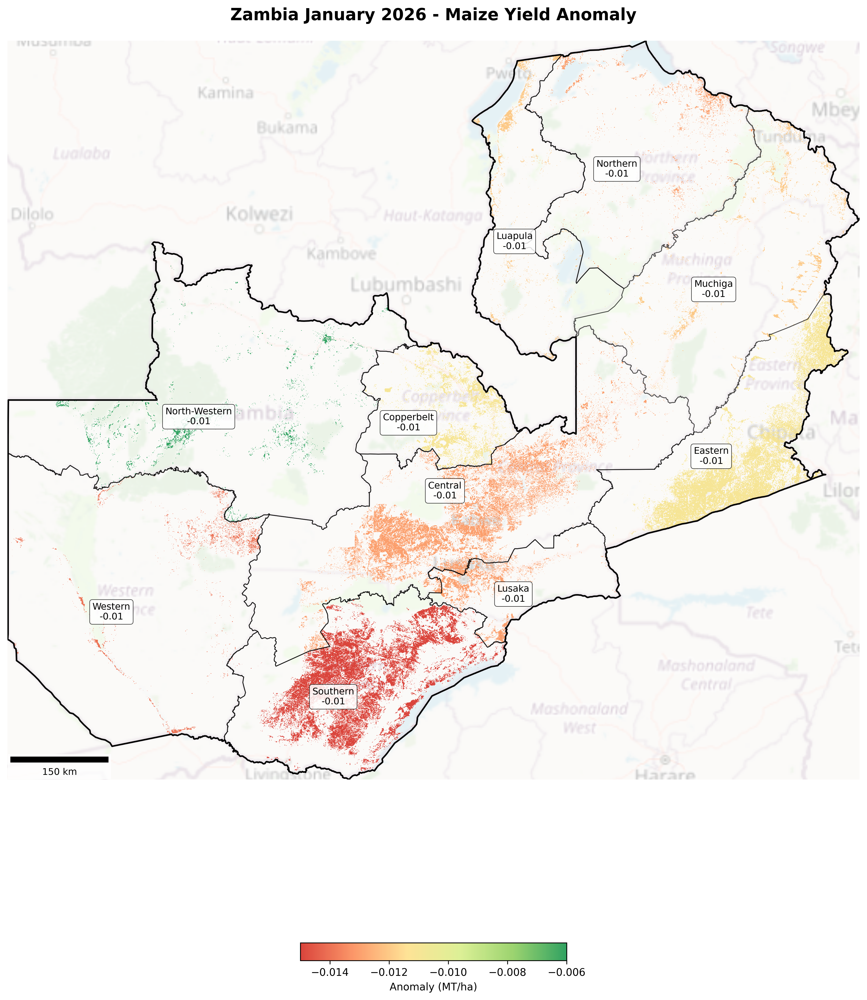
Regional Maize Yield Anomaly
In January 2026, Southern province in Zambia shows the largest negative maize yield anomaly of approximately -0.014 MgT/ha, indicating significantly below-average yields, while North-Western province exhibits slight positive anomalies near -0.006 MgT/ha, representing the top-performing region.
Beans Maps
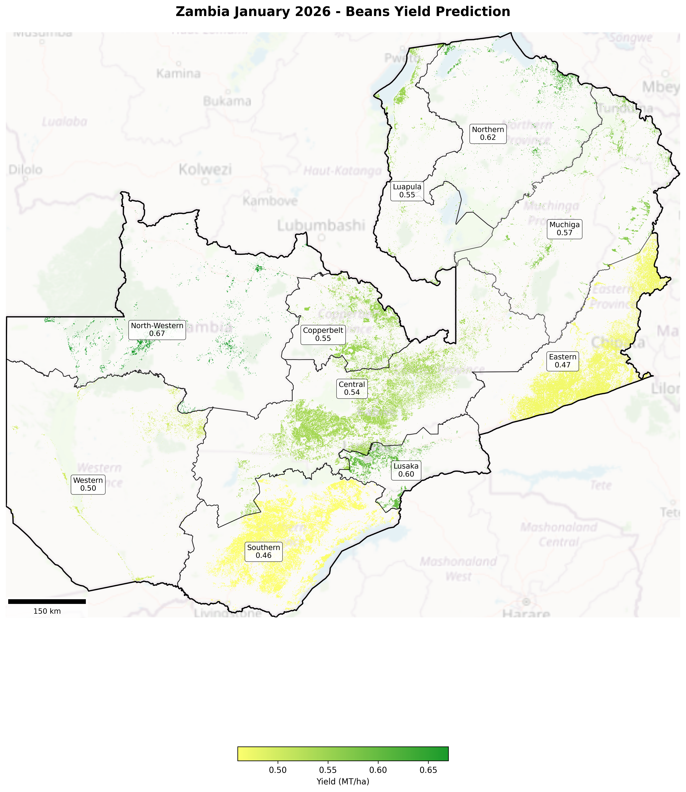
Regional Beans Yield Forecasts
In January 2026, North-Western province is the top-performing region in Zambia with a bean yield prediction of 0.67 MgT/ha, while Southern and Eastern provinces show the lowest yields at 0.46 and 0.47 MgT/ha respectively, indicating notable spatial variability in production.
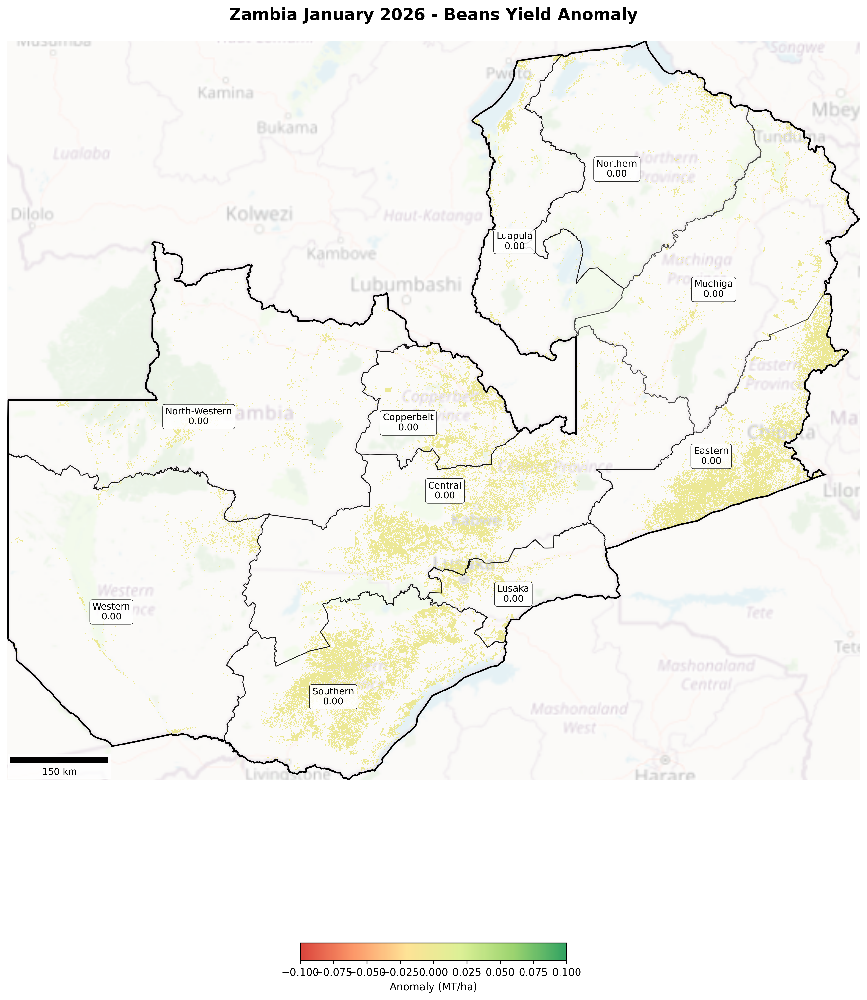
Regional Beans Yield Anomaly
In January 2026, Zambia’s beans yield anomaly shows the highest negative deviations predominantly in the Southern and Eastern regions, with anomalies reaching below 0.0060 MgT/ha, indicating significant below-average yield. Conversely, the North-Western region has slight positive anomalies around 0.0080 MgT/ha, marking it as the top performing area for bean yields.
Rice Maps
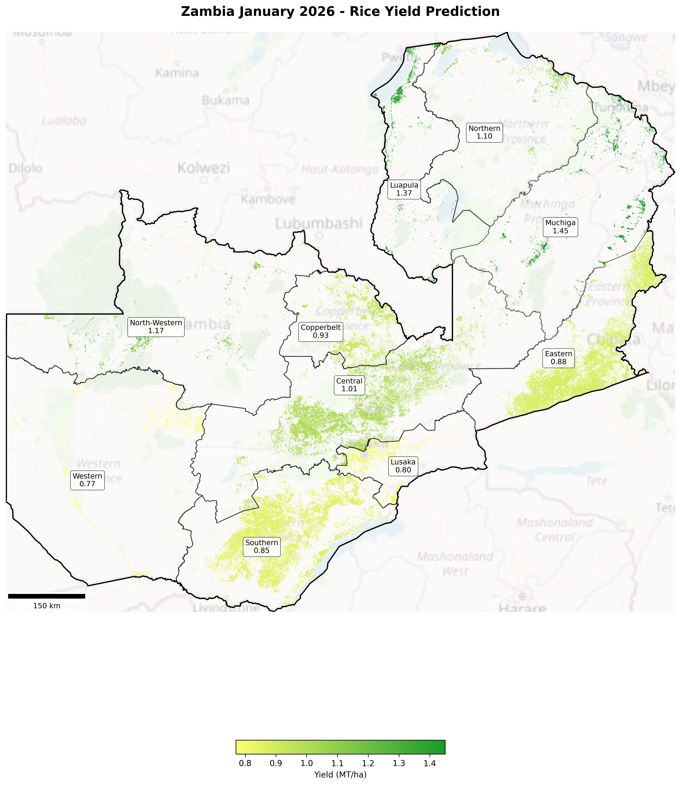
Regional Rice Yield Forecasts
In January 2026, Muchinga leads Zambia in rice yield prediction at 1.49 MgT/ha, while Western shows the lowest yield at 0.75 MgT/ha. The map highlights a general north-south gradient with higher yields in northern regions like Muchinga and the lowest in southern and western regions.
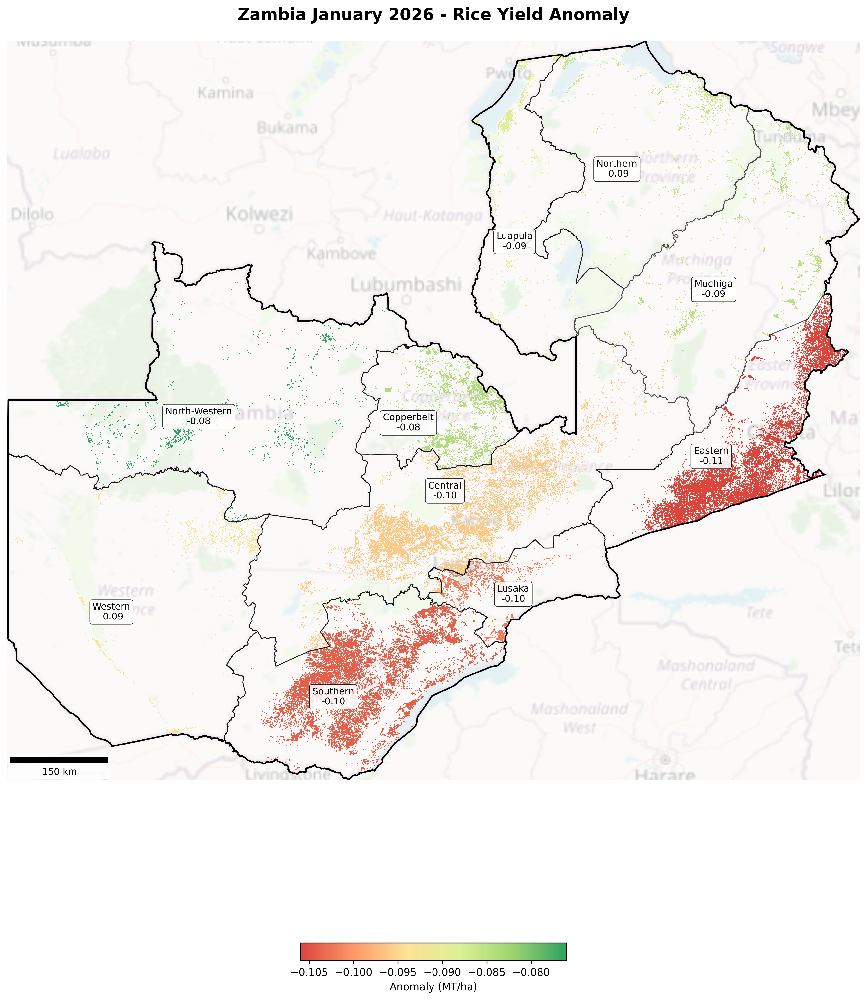
Regional Rice Yield Anomaly
In January 2026, Zambia's rice yield anomalies ranged from -0.11 MgT/ha in Eastern Province, the lowest performing region, to -0.08 MgT/ha in Copperbelt and North-Western provinces, which showed the least negative anomalies. The Eastern Province exhibited the most extreme negative yield anomaly.
Production Narrative
Maize dominates with the largest production area across all regions totaling approximately 1,097,220 hectares cumulatively (sum of individual region areas) and predicted mean production exceeding 3.4 million tons. Top maize producing regions include Central (mean production ~1,029,439 tons), Eastern (~756,964 tons), and Southern (~604,636 tons) provinces. Beans have more modest production areas, with Central (~32,002 ha), Eastern (~33,990 ha), and Southern (~23,915 ha) as leading areas and mean predicted productions ranging from about 4,460 to 17,281 tons regionally, indicating steady but smaller-scale production relative to maize. Rice has the smallest cultivation area, ranging from 334 ha in Western to 12,739 ha in Eastern, with mean production estimates generally below 12,114 tons, reflecting a minor share of total crop output. Trends for maize and beans are stable, albeit with slight negative yield anomalies for maize and stable positive anomalies for beans, whereas rice shows uniform negative yield anomalies, suggesting potential risks for rice production stability.
Regional Production Forecast Tables
Kenya – Regional Production Table
| Crop | Region | Predicted Yield (MT/ha) | Yield Anomaly | Min–Max Production (tons) | Condition |
|---|---|---|---|---|---|
| Beans | Embu | 0.17 | 0.022 | 100.0 – 12122.0 | Favorable |
| Beans | Garissa | 0.35 | 0.01 | 8.0 – 615.0 | Favorable |
| Beans | Isiolo | 0.11 | 0.02 | 100.0 – 631.0 | Favorable |
| Beans | Kitui | 0.36 | 0.017 | 1329.0 – 102337.0 | Favorable |
| Beans | Machakos | 0.5 | 0.017 | 8284.0 – 53252.0 | Favorable |
| Beans | Makueni | 0.22 | 0.017 | 100.0 – 49135.0 | Favorable |
| Beans | Mandera | 0.3 | 0.012 | 100.0 – 623.0 | Favorable |
| Beans | Marsabit | 0.25 | 0.019 | 100.0 – 639.0 | Favorable |
| Beans | Meru | 0.17 | 0.024 | 100.0 – 35788.0 | Favorable |
| Beans | Samburu | 0.03 | 0.023 | 100.0 – 1267.0 | Favorable |
| Beans | Tharaka-Nithi | 0.65 | 0.009 | 5743.0 – 19824.0 | Favorable |
| Beans | Wajir | 0.46 | 0.01 | 3.0 – 22.0 | Favorable |
| Maize | Embu | 0.64 | 0.004 | 4398.0 – 48773.0 | Favorable |
| Maize | Garissa | 0.63 | -0.011 | 206.0 – 1946.0 | Watch |
| Maize | Isiolo | 0.6 | -0.008 | 182.0 – 2726.0 | Watch |
| Maize | Kitui | 0.24 | -0.009 | 100.0 – 218271.0 | Watch |
| Maize | Machakos | 0.63 | -0.011 | 11708.0 – 142834.0 | Watch |
| Maize | Makueni | 0.48 | -0.008 | 100.0 – 160046.0 | Watch |
| Maize | Mandera | 0.27 | -0.003 | 100.0 – 1475.0 | Watch |
| Maize | Marsabit | 0.35 | -0.012 | 100.0 – 1813.0 | Watch |
| Maize | Meru | 0.58 | 0.013 | 3541.0 – 138085.0 | Favorable |
| Maize | Samburu | 2.57 | -0.001 | 10563.0 – 16859.0 | Watch |
| Maize | Tharaka-Nithi | 1.13 | -0.007 | 22729.0 – 62322.0 | Watch |
| Maize | Turkana | 1.05 | 0.003 | 757.0 – 2401.0 | Favorable |
| Maize | Wajir | 1.28 | -0.017 | 38.0 – 96.0 | Watch |
| Rice | Embu | 0.49 | -0.092 | 100.0 – 772.0 | Poor |
| Rice | Garissa | 1.68 | -0.067 | 16.0 – 52.0 | Watch |
| Rice | Meru | 1.2 | -0.086 | 518.0 – 3493.0 | Watch |
| Rice | Tharaka-Nithi | 0.99 | -0.1 | 50.0 – 932.0 | Poor |
United Republic Of Tanzania – Regional Production Table
| Crop | Region | Predicted Yield (MT/ha) | Yield Anomaly | Min–Max Production (tons) | Condition |
|---|---|---|---|---|---|
| Beans | Dodoma | 0.56 | 0.006 | 5171.0 – 21624.0 | Favorable |
| Beans | Iringa | 0.84 | 0.004 | 2798.0 – 6827.0 | Favorable |
| Beans | Katavi | 0.31 | 0.007 | 100.0 – 6423.0 | Favorable |
| Beans | Kigoma | 0.67 | 0.006 | 3634.0 – 11562.0 | Favorable |
| Beans | Lindi | 0.85 | 0.004 | 1270.0 – 3089.0 | Favorable |
| Beans | Mbeya | 0.73 | 0.004 | 5303.0 – 15094.0 | Favorable |
| Beans | Mtwara | 1.07 | 0.004 | 1583.0 – 3145.0 | Favorable |
| Beans | Njombe | 0.94 | 0.003 | 3081.0 – 6893.0 | Favorable |
| Beans | Rukwa | 0.74 | 0.004 | 6334.0 – 17735.0 | Favorable |
| Beans | Ruvuma | 0.73 | 0.005 | 3166.0 – 9011.0 | Favorable |
| Beans | Singida | 0.58 | 0.006 | 5073.0 – 20954.0 | Favorable |
| Beans | Tabora | 0.47 | 0.006 | 5787.0 – 35137.0 | Favorable |
| Maize | Dodoma | 0.56 | -0.02 | 13264.0 – 189005.0 | Watch |
| Maize | Iringa | 1.47 | -0.017 | 39080.0 – 80924.0 | Watch |
| Maize | Katavi | 1.37 | -0.015 | 54245.0 – 123807.0 | Watch |
| Maize | Kigoma | 1.38 | -0.012 | 66025.0 – 150691.0 | Watch |
| Maize | Lindi | 0.74 | -0.017 | 4218.0 – 23200.0 | Watch |
| Maize | Mbeya | 1.75 | -0.02 | 120862.0 – 222539.0 | Watch |
| Maize | Mtwara | 0.88 | -0.014 | 6122.0 – 22194.0 | Watch |
| Maize | Njombe | 1.61 | -0.018 | 39048.0 – 81044.0 | Watch |
| Maize | Rukwa | 1.99 | -0.018 | 164205.0 – 285962.0 | Watch |
| Maize | Ruvuma | 2.02 | -0.015 | 87620.0 – 148324.0 | Watch |
| Maize | Singida | 0.82 | -0.021 | 54456.0 – 217826.0 | Watch |
| Maize | Tabora | 1.09 | -0.017 | 177872.0 – 484046.0 | Watch |
| Rice | Dodoma | 0.94 | -0.08 | 6506.0 – 53819.0 | Watch |
| Rice | Iringa | 1.71 | -0.103 | 7252.0 – 18588.0 | Poor |
| Rice | Katavi | 1.75 | -0.096 | 11382.0 – 30048.0 | Poor |
| Rice | Kigoma | 1.72 | -0.087 | 13854.0 – 36852.0 | Watch |
| Rice | Lindi | 0.86 | -0.095 | 627.0 – 5579.0 | Poor |
| Rice | Mbeya | 1.89 | -0.105 | 20531.0 – 47734.0 | Poor |
| Rice | Mtwara | 0.79 | -0.096 | 328.0 – 4641.0 | Poor |
| Rice | Njombe | 0.81 | -0.086 | 526.0 – 12089.0 | Watch |
| Rice | Rukwa | 2.39 | -0.102 | 33074.0 – 67144.0 | Poor |
| Rice | Ruvuma | 1.38 | -0.097 | 6026.0 – 23288.0 | Poor |
| Rice | Singida | 0.98 | -0.09 | 7215.0 – 52172.0 | Watch |
| Rice | Tabora | 1.18 | -0.087 | 24964.0 – 107659.0 | Watch |
Malawi – Regional Production Table
| Crop | Region | Predicted Yield (MT/ha) | Yield Anomaly | Min–Max Production (tons) | Condition |
|---|---|---|---|---|---|
| Beans | Central Region | 0.52 | 0.006 | 32641.0 – 165018.0 | Favorable |
| Beans | Northern Region | 0.69 | 0.006 | 23455.0 – 73046.0 | Favorable |
| Beans | Southern Region | 0.92 | 0.003 | 67883.0 – 154821.0 | Favorable |
| Maize | Central Region | 2.53 | -0.016 | 1812341.0 – 2795152.0 | Watch |
| Maize | Northern Region | 2.12 | -0.008 | 529812.0 – 896348.0 | Watch |
| Maize | Southern Region | 1.16 | -0.004 | 402669.0 – 1018517.0 | Watch |
| Rice | Central Region | 1.48 | -0.104 | 26472.0 – 95219.0 | Poor |
| Rice | Northern Region | 1.16 | -0.099 | 5548.0 – 30808.0 | Poor |
| Rice | Southern Region | 1.0 | -0.093 | 6228.0 – 49820.0 | Poor |
Zambia – Regional Production Table
| Crop | Region | Predicted Yield (MT/ha) | Yield Anomaly | Min–Max Production (tons) | Condition |
|---|---|---|---|---|---|
| Beans | Central | 0.54 | 0.006 | 6400.0 – 29122.0 | Favorable |
| Beans | Copperbelt | 0.55 | 0.006 | 1807.0 – 8089.0 | Favorable |
| Beans | Eastern | 0.47 | 0.006 | 4759.0 – 28552.0 | Favorable |
| Beans | Luapula | 0.56 | 0.007 | 1268.0 – 5677.0 | Favorable |
| Beans | Lusaka | 0.6 | 0.006 | 1045.0 – 3753.0 | Favorable |
| Beans | Muchiga | 0.57 | 0.006 | 1980.0 – 8179.0 | Favorable |
| Beans | North-Western | 0.67 | 0.008 | 1211.0 – 3974.0 | Favorable |
| Beans | Northern | 0.63 | 0.006 | 2836.0 – 10228.0 | Favorable |
| Beans | Southern | 0.46 | 0.006 | 3109.0 – 19849.0 | Favorable |
| Beans | Western | 0.5 | 0.006 | 152.0 – 794.0 | Favorable |
| Maize | Central | 2.99 | -0.013 | 867621.0 – 1218801.0 | Watch |
| Maize | Copperbelt | 2.69 | -0.011 | 202741.0 – 300872.0 | Watch |
| Maize | Eastern | 2.07 | -0.011 | 585093.0 – 958089.0 | Watch |
| Maize | Luapula | 2.78 | -0.012 | 148143.0 – 217666.0 | Watch |
| Maize | Lusaka | 2.86 | -0.013 | 99910.0 – 141955.0 | Watch |
| Maize | Muchiga | 3.4 | -0.012 | 270447.0 – 366771.0 | Watch |
| Maize | North-Western | 2.38 | -0.006 | 76148.0 – 120127.0 | Watch |
| Maize | Northern | 2.87 | -0.013 | 257143.0 – 374819.0 | Watch |
| Maize | Southern | 2.35 | -0.015 | 486282.0 – 748720.0 | Watch |
| Maize | Western | 1.32 | -0.014 | 8066.0 – 18052.0 | Watch |
| Rice | Central | 1.01 | -0.096 | 3478.0 – 22909.0 | Poor |
| Rice | Copperbelt | 0.93 | -0.084 | 806.0 – 6128.0 | Watch |
| Rice | Eastern | 0.87 | -0.106 | 1274.0 – 22548.0 | Poor |
| Rice | Luapula | 1.4 | -0.089 | 1697.0 – 5295.0 | Watch |
| Rice | Lusaka | 0.78 | -0.102 | 29.0 – 2422.0 | Poor |
| Rice | Muchiga | 1.49 | -0.085 | 2613.0 – 7710.0 | Watch |
| Rice | North-Western | 1.18 | -0.076 | 752.0 – 3063.0 | Watch |
| Rice | Northern | 1.11 | -0.086 | 1632.0 – 7894.0 | Watch |
| Rice | Southern | 0.84 | -0.104 | 717.0 – 15596.0 | Poor |
| Rice | Western | 0.75 | -0.093 | 23.0 – 551.0 | Poor |
Model Description and Parameters
Crop Conditions Classes
| Class | Definition |
|---|---|
| Exceptional | Conditions are much better than average at the time of reporting. Used only during the grain-filling through harvest stages. |
| Favorable | Conditions range from slightly below to slightly above-average at reporting time. |
| Watch | Near average but with risk to final yields; recovery possible if conditions improve. |
| Poor | Well below average; yields likely 10–25% below average with limited recovery potential. |
Data Sources
| Data Type | Source |
|---|---|
| NDVI | UMD GLAM system |
| ESI | NASA SERVIR Global |
| Precipitation | CHIRPS (historical), NOAA CPC |
| Precipitation Forecast | CHIRPS-GEFS |
| Soil Moisture | NASA–USDA Global (SMOS) |
| Temperature | NOAA CPC |
Model Performance Summary
Our yield prediction model is evaluated using historical data to assess accuracy and reliability. Performance metrics are calculated by comparing predicted yields against actual reported yields from previous seasons. The ensemble approach combines multiple remote sensing inputs (NDVI, ESI, precipitation, soil moisture) across a random forest architecture trained per country and crop.
Metrics Explanation
- R² Score: Coefficient of determination (0–1); values above 0.7 indicate strong predictive power.
- RMSE: Root Mean Square Error — average magnitude of prediction errors in MT/ha. Lower is better.
- MAE: Mean Absolute Error — average absolute difference between predicted and actual yields in MT/ha. Lower is better.
Disclaimer
The opinions expressed in this report are those of the authors and do not necessarily reflect the official policy or position of AGRA, its employees, partners, or affiliates. While every effort has been made to ensure the accuracy and completeness of the information, we assume no responsibility for any errors or omissions.
Project Lead: Dr. Catherine Nakalembe
Team: Xylem Lab / NASA Harvest–Africa Team
Date: January